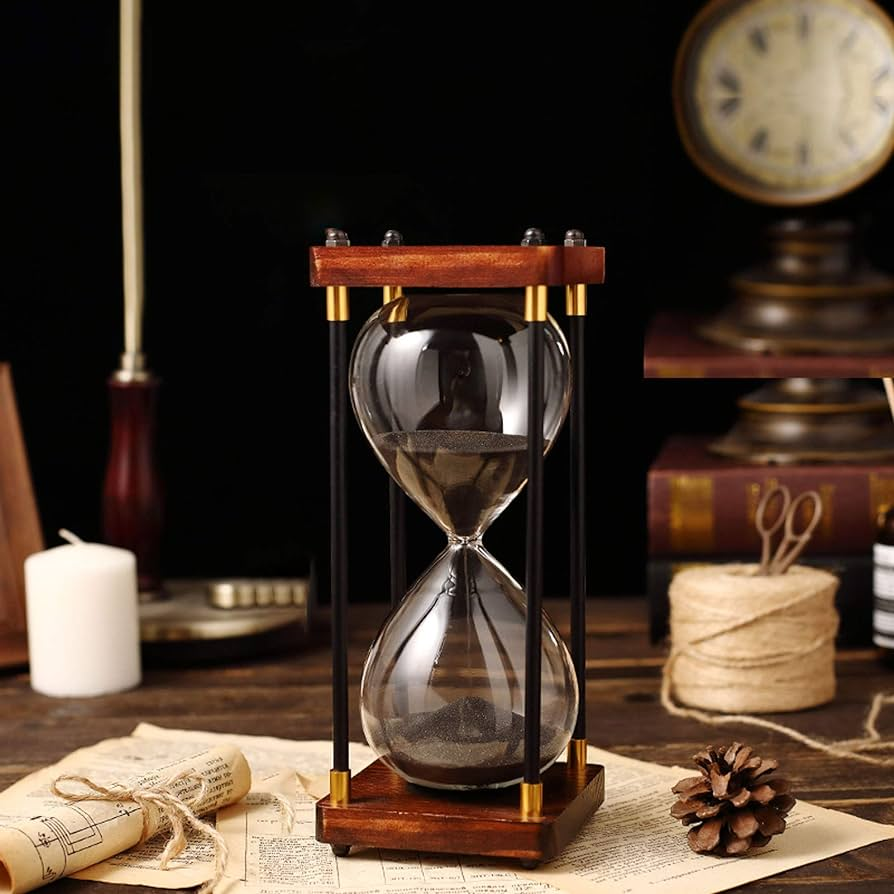

La clessidra (anticamente clepsidra;[1] chiamata anche orologio a sabbia o molto meno comunemente con il neologismo clepsamia)[2] è uno strumento per la misura del tempo costituito da due recipienti di forma approssimativamente conica collegati tra di loro, tra i quali scorre una polvere finissima. Il termine clessidra in italiano può indicare (più raramente) anche il tipo ad acqua. Già nell'antico Egitto veniva utilizzata per misurare piccole quantità di tempo.
Clessidra viene dal greco κλεψύδρα (klepsýdra), che significa letteralmente "ruba-acqua", e si riferiva originariamente alla clessidra ad acqua.
La sabbia fluisce con regolarità dal bulbo superiore a quello inferiore in un tempo preciso. Al termine è sufficiente capovolgere lo strumento per cominciare un altro periodo. La durata del ciclo dipende dalla quantità e qualità di sabbia, dalla dimensione del collo e dalla forma dei bulbi. In alternativa alla sabbia sono utilizzate anche polveri di calcare (da gusci di uovo o marmo polverizzati).
Questo strumento ha oggi solamente una valenza estetica, poiché strumenti più precisi e comodi sono a disposizione. In passato invece, prima del perfezionamento dell'orologio a pendolo, era l'unico strumento affidabile per la misura del tempo in mare e si suppone che il suo impiego in questo senso possa essere cominciato nel XII secolo. Prove certe si hanno solamente dal XIV secolo, quando la clessidra è riprodotta in alcune opere di Ambrogio Lorenzetti. Durante il viaggio di Ferdinando Magellano attorno al globo, su ogni nave della flotta erano utilizzate 18 clessidre, e uno dei compiti dell'equipaggio era di capovolgerle all'istante giusto. La sincronizzazione delle clessidre era fatta a mezzogiorno, identificabile dal fatto che il Sole raggiunge la sua massima altezza sull'orizzonte.
Benché la durata di una clessidra non sia determinata esclusivamente dalla sua dimensione, se però la sabbia scorre per diversi giorni o settimane, si tratta di certo di un esemplare di dimensioni notevoli.
Due di questi giganti sono la ruota del tempo a Budapest e la clessidra nel museo della sabbia di Nima. Con un'altezza rispettivamente di otto e sei metri e una durata di scorrimento di un anno ciascuna, sono due tra gli orologi più grandi del mondo. Un altro gigante si trova dal 2008 sulla Piazza Rossa di Mosca. Alto 11,90 m e pesante 40 tonnellate, è la clessidra più grande del mondo: i due bulbi di vetro dello strumento sono così grandi che possono ospitare comodamente un'automobile lunga 5 m.
La clessidra più piccola del mondo misura invece solo 2,4 cm. Fu costruita ad Amburgo nel 1992 e, per un ciclo completo, richiede meno di 5 secondi.